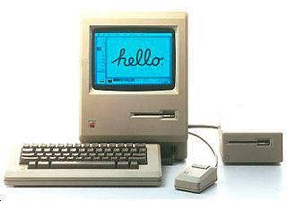

Created by Jimmy Jacobson

10 PRINT "Hello World!"
20 GOTO 10
Manipulate HTML on your Webpage
$(document).ready(function(){
$("button").click(function(){
$("#div1").fadeToggle();
$("#div2").fadeToggle("slow");
$("#div3").fadeToggle(3000);
});
});
var data = {
labels : ["January","February","March","April","May","June","July"],
datasets :
[{
fillColor : "rgba(220,220,220,0.5)",
strokeColor : "rgba(220,220,220,1)",
pointColor : "rgba(220,220,220,1)",
pointStrokeColor : "#fff",
data : [65,59,90,81,56,55,40]
}]
};
var ctx = document.getElementById("myChart").getContext("2d");
new Chart(ctx).Line(data, {});
This whole presentation is in HTML, CSS and Javascript
I have some if you don't